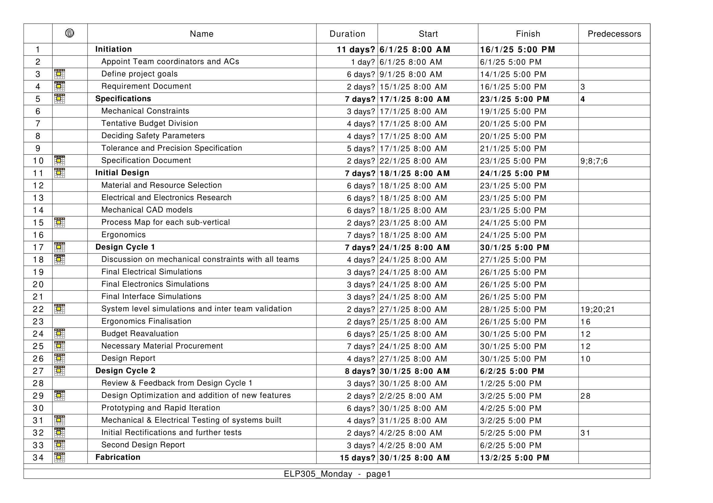
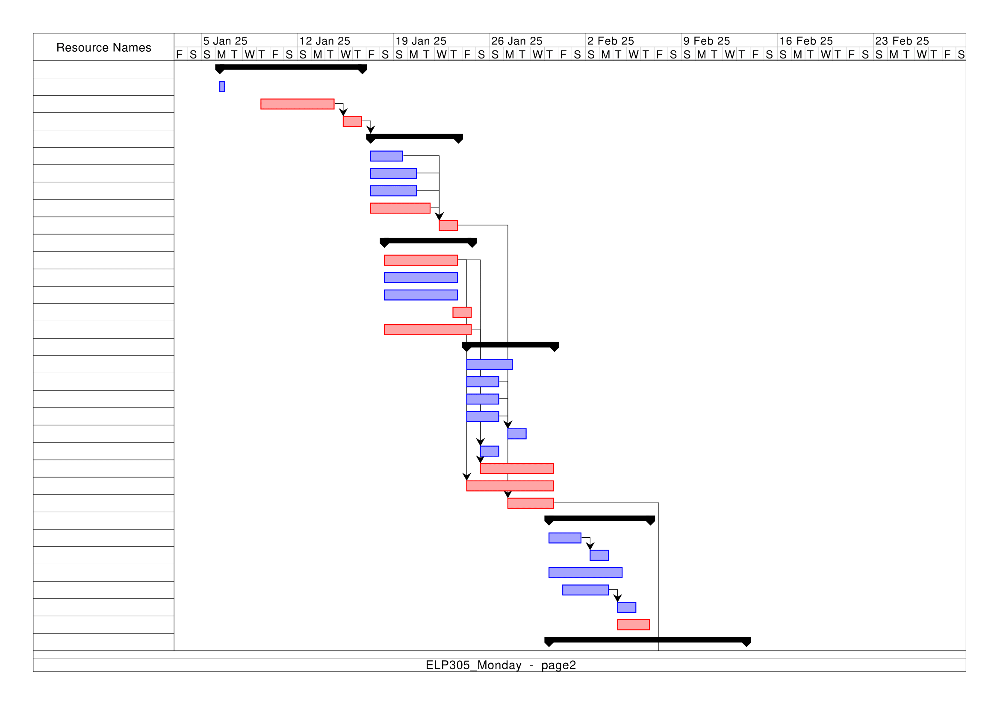
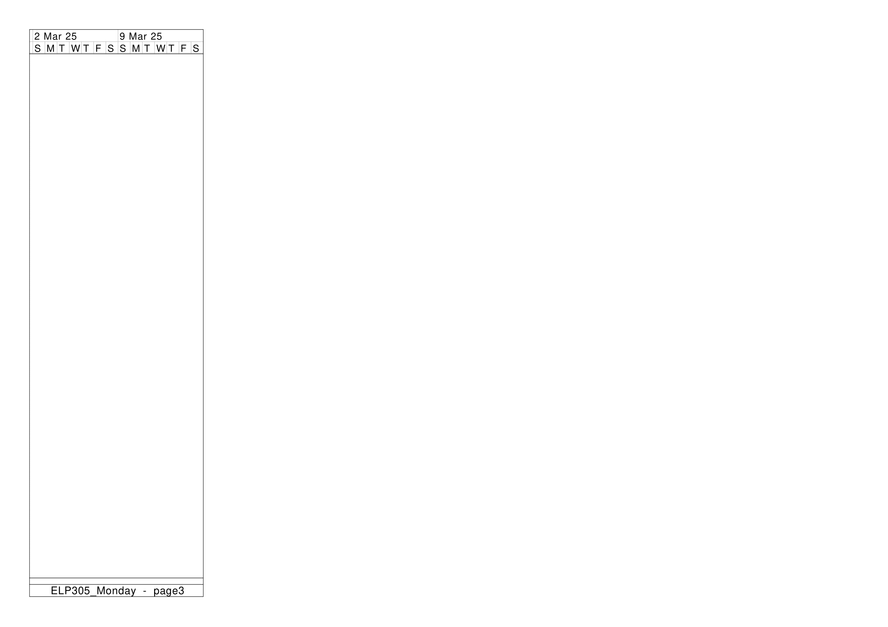
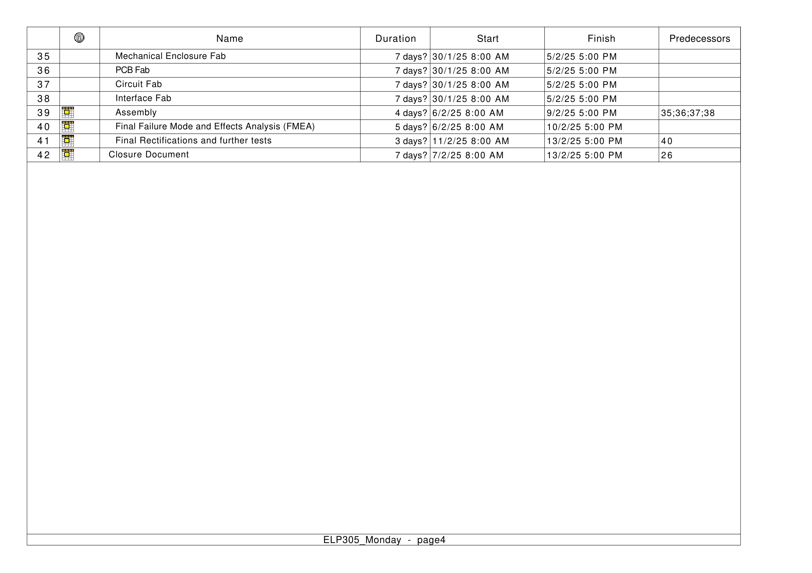
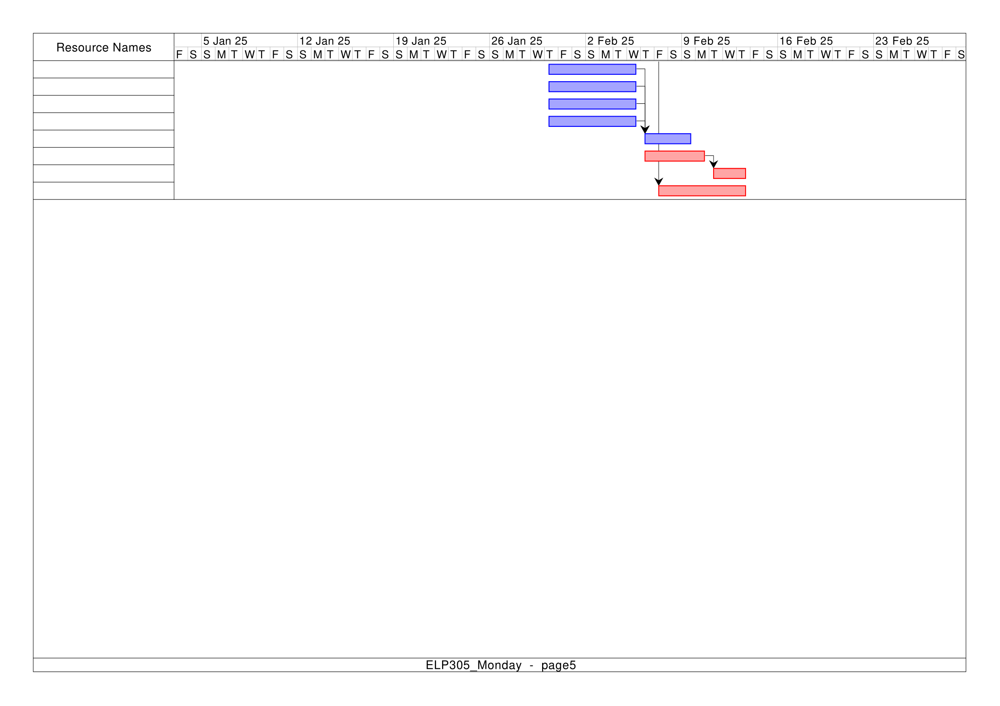
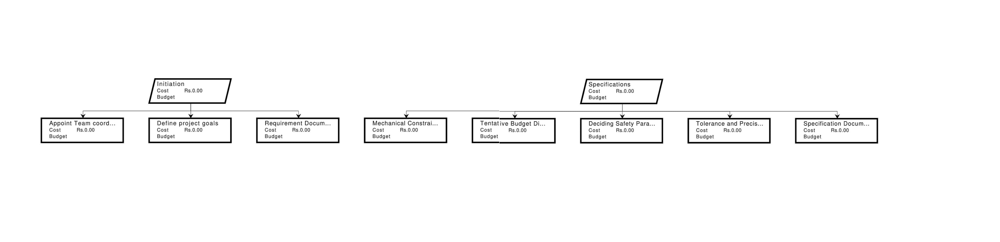
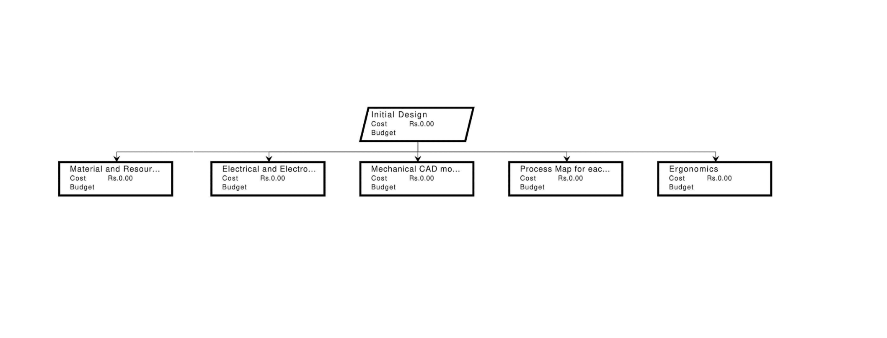
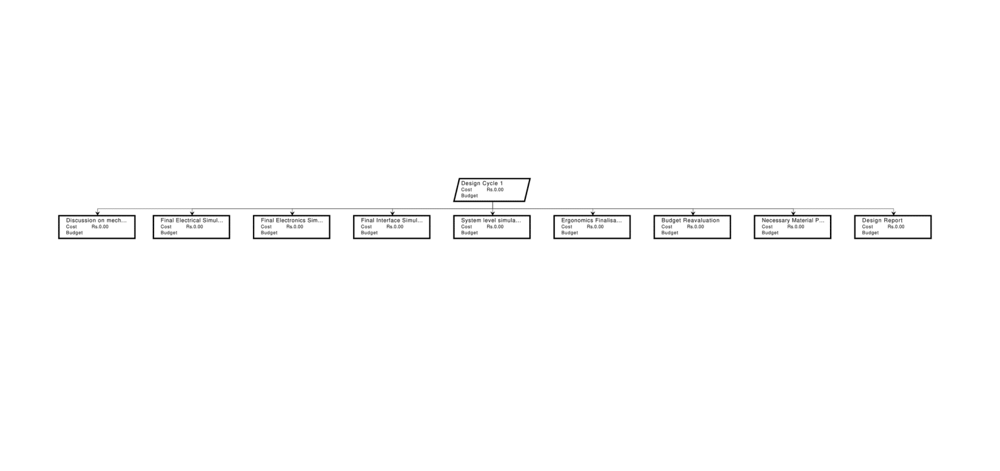
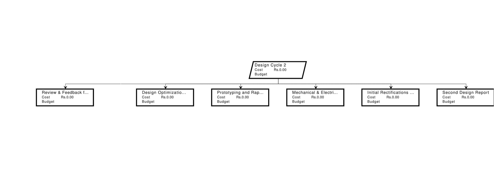
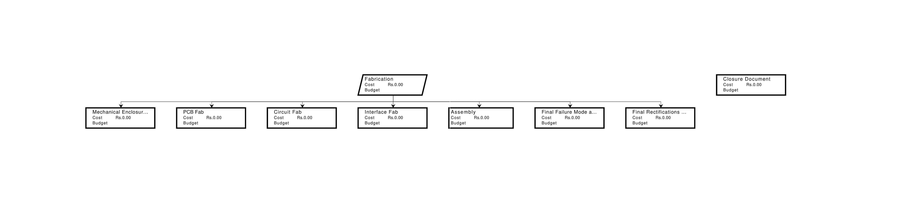

| Abbreviation | Expansion |
|---|---|
| SNR | Signal to Noise Ratio |
| EMI | Electromagnetic Interference |
| LED | Light Emitting Diode |
| OLED | Organic Light Emitting Diode |
| I2C | Inter-Integrated Circuit |
| CAD | Computer-Aided Design |
| IP | Ingress Protection |
| RH | Relative Humidity |
| TRL | Technology Readiness Level |
| DOF | Degree of Freedom |
| ESP | Espressif Systems Protocol |
| UI | User Interface |
name=EMI, description=Disturbance caused by electromagnetic signals affecting other devices
name=ATMega328p-AU, description=A low-power 8-bit microcontroller by Microchip, widely used in embedded systems for its efficiency, reliability, and compatibility with Arduino platforms
name=AD9833, description=A low-power programmable waveform generator IC capable of producing sine, triangle, and square waves with high precision name=BOM, description=A refined BOM in electrical engineering is an updated and detailed list of all materials, components, and parts required for a project, including specifications and quantities to ensure efficient assembly and procurement. name=SPI, description=A high-speed communication protocol used for data exchange between microcontrollers and peripheral devices over short distances name=HD44780, description=A widely used LCD controller for 16x2 and 20x4 character displays, known for its ease of interfacing with microcontrollers name=LM358, description=A general-purpose operational amplifier (op-amp) used for amplification, buffering, and signal conditioning in analog circuits name=CAD, description=Software used to create precise 2D or 3D designs, technical drawings, and simulations for engineering and manufacturing name=KiCad, description=An open-source electronic design automation (EDA) tool used for creating schematics, PCB layouts, and circuit simulations name=NE555, description=The NE555 is a versatile timer IC used for generating accurate time delays, oscillations, and pulse signals in electronic circuits, commonly used in timing, waveform generation, and signal processing applications. name=ESP32, description=A powerful microcontroller with integrated Wi-Fi and Bluetooth, designed for IoT applications, automation, and wireless communication name=I2C, description=is a synchronous, multi-master, multi-slave serial communication protocol that uses two bidirectional lines, SCL (clock) and SDA (data), for low-speed data exchange. It is widely used in embedded systems to connect microcontrollers with sensors, memory chips, and other peripherals.
| Name | Entry Number | IF | Justification |
|---|---|---|---|
| Name | Entry Number | IF | Justification |
| Name | Entry Number | IF | Justification |
| Aarnav Singh | 2022EE11161 | 1 | |
| Aarth Bhardwaj | 2022ee31747 | 0.59 | NRV |
| Abdullah Tanveer | 2022EE11712 | 1 | |
| Abhineet Singh | 2022MT11736 | 0.88 | |
| Aditi Gaur | 2022MT11298 | 1 | |
| Aditya Nagarkar | 2022EE31224 | 1 | |
| Aditya Raj | 2022EE31760 | 0.59 | NRV |
| Aditya vijay | 2022EE11166 | 1 | |
| Akarsh Gupta | 2022MT61966 | 0.86 | |
| Aman Gupta | 2022EE11808 | 1 | |
| Anany Mishra | 2022MT61965 | 1 | |
| Anish kumar | 2022EE11708 | 0.74 | PCT |
| Ankur Khetan | 2022EE31753 | 1 | |
| Apoorva Prashant Jain | 2022EE11657 | 1 | |
| Arpit Moga | 2022EE31777 | 1 | |
| Arunim | 2022EE32002 | 1 | |
| Aryan Jangra | 2022EE11716 | 1 | |
| Aryan Sharma | 2021EE10141 | 0 | NRV |
| Aryan Verma | 2022EE11671 | 1 | |
| Astha Lohia | 2022MT11927 | 1 | |
| Ayush Jagatramka | 2021MT10286 | 1 | |
| C VARSHITH REDDY | 2022EE11693 | 1 | |
| Chandan Kumar Thakur | 2022EE31773 | 0.98 | |
| Deepak Kumar Jha | 2021MT10233 | 0.4 | NRV |
| Dev Elvis Kannath | 2022MT61961 | 0.98 | |
| Dev Sharma | 2022EE31308 | 1 | |
| Dhanashri Shivdas | 2022EE31907 | 1 | |
| Dheeraj HJ | 2022EE11704 | 0.94 | |
| Dhruv Belawat | 2022EE11661 | 1 | |
| Divyansh Raj Sinha | 2022EE31194 | 0.98 | |
| Divyanshu Pal | 2022MT11295 | 0.55 | NRV |
| Gandharva Chhipa | 2022EE11663 | 1 | |
| Hariom | 2022EE11697 | 1 | |
| Harshit Baraskar | 2022EE31769 | 1 | |
| Hitesh Yadav | 2022MT11322 | 1 | |
| Ishaan Lakhotiya | 2022EE11677 | 1 | |
| Ishu Rajput | 2022EE11173 | 1 | |
| Jaipal | 2022EE11705 | 0 | NRV |
| Jay Kumar | 2022EE31781 | 0.71 | PCT |
| Jaya Chauhan | 2022EE31786 | 1 | |
| Jitendra Meena | 2022EE31787 | 0 | NRV |
| Kalangi Sai Venkata Krishna Sendhvil | 2022EE11700 | 1 | |
| Kartikey Agarwal | 2022EE11156 | 1 | |
| Krishna Gopal Agarwal | 2022EE31762 | 0.51 | NRV |
| Kriti Garg | 2022EE11684 | 1 | |
| Lisha Goel | 2022EE11685 | 1 | |
| Madhav Gupta | 2022EE11737 | 1 | |
| Manas Singla | 2021MT10599 | 1 | |
| Mayank Agarwal | 2022EE31759 | 0.76 | PCT |
| Mayank kumar jha | 2022EE11673 | 1 | |
| Mitali Bhagat | 2020MT10821 | 1 | |
| Naman Goel | 2022MT11272 | 1 | |
| Naveen Kumar Raypuriya | 2022EE11181 | 0 | NRV |
| Prabhjit Singh | 2022EE11720 | 0.98 | |
| Pratyush Agrawal | 2022EE11158 | 1 | |
| Rakshit Sohlot | 2022MT11919 | 1 | |
| Rinku Meena | 2022EE11187 | 0 | NRV |
| Rishit Jaiswal | 2022EE31771 | 0.71 | PCT |
| Rohan Chaturvedi | 2022MT11262 | 1 | |
| Rohan Roy | 2022MT11294 | 0.94 | |
| Rohit Shaw | 2022MT61988 | 0 | NRV |
| Saem Habeeb | 2022MT62004 | 1 | |
| Sahaj Jain | 2022EE31741 | 0.79 | PCT |
| Samyak Jain | 2022MT11658 | 0.92 | |
| Sanchit Jindal | 2022EE31738 | 1 | |
| Shubham Singh | 2022EE11725 | 1 | |
| Sunrit Roy Karmakar | 2021MT10702 | 1 | |
| Sushant kumar | 2022EE12045 | 1 | |
| Teekam singh | 2022EE31770 | 0.88 | |
| Tejas | 2022EE31199 | 0.83 | |
| Tushar Verma | 2022EE31742 | 1 | |
| Ujjawal meena | 2022EE11733 | 1 | |
| Vaibhav Ahuja | 2022EE11839 | 1 | |
| Vamika | 2022EE11182 | 0.94 | |
| Vatsal Jain | 2022EE11672 | 1 | |
| Vikas Kumar | 2022EE11149 | 0.94 | |
| Vinit Shende | 2021MT10260 | 1 | |
| Vipul | 2022EE31198 | 0.94 | |
| Yadvendra Gurjar | 2022EE31764 | 0.74 | PCT |
| Yagya Goyal | 2022EE11157 | 1 |
NRV : No responses to emails or messages were received. Did not come forward to volunteer.
PCT : Partial completion of allotted tasks.
“Simplicity is the ultimate sophistication.” – Leonardo da Vinci
The primary objective of this project is to design
and develop a function generator tailored to the specific needs of
students enrolled in the ELP101 Basic Electronics Laboratory . Recognizing that
these students are at the beginning of their journey in electronics, we
aim to create an intuitive, cost-effective device focused on
fundamental functionality.
Commercial function generators have features which are not needed for
ELP101 level experiments. Our function generator will address this by
offering essential waveform generation capabilities—such as sine,
square, and triangular waves—while maintaining simplicity and
reliability suitable for a ELP101 laboratory environment.
Beyond supporting standard laboratory experiments, the device’s
affordability will attract the beginner and encourage
experimentation.
Our ultimate goal is to enhance the ELP101 lab experience, making it more engaging and effective, while cultivating a passion for electronics among first-year students.
Functions: Square (Duty cycle), Ramp, Triangular, Sine (with a DC offset)
Frequency range: 0.1Hz - 1MHz
Amplitude range: 10V peak-to-peak
Error Bound:
Till 100 Hz: ±0.1 Hz
100–1 kHz: ±1 Hz
1 kHz–10 kHz: ±10 Hz
10 kHz–100 kHz: ±100 Hz
100 kHz–1 MHz: ±1 kHz
No. of output channels: 1
Constant Output produced irrespective of external circuit impedance (reliable signal for experiments, ensuring consistency even when the connected circuit has varying impedance)
Output Port(Sync Port), within metallic box connected to the ground to prevent EMI interference
SNR ratio/ Noise rejection
DC offset range: 12V - 15V
Short-circuit protection / Overcurrent protection
Metal body grounded
Electrostatic discharge protection
OLED
90∘ angle power cable
Coarse tuning and fine tuning
Function display
Frequency display
Amplitude value display
Monochrome
Wide angle view, OLED Screen
Stable conversion with output voltage ripple:
Light Load (50mA): 30–50mV
Medium Load (200mA): 50–100mV
Heavy Load (1A): 100–200mV
Insufficient Output Capacitance: >200mV (unstable)
Wire at 90 degrees (structural component)
Finite rotation knob (0 to 270 degrees)
Arrow on the knob (provides clear direction for adjustments)
Use of Joystick (Simplifies setting a wide frequency range without excessive knob rotation)
Easy-to-understand buttons (buttons should specify their functions)
Power ON button should be on the front panel (not on top/sides, as there will then be a problem in stacking on the rack of standard dimensions)
Insulated
Gaskets and aluminum foil are used to shield the device from EMI Interference
The circuit should fit inside the box with heat sinks and padding
Dimensions: W 212 X H 114 X D 283 (9 inch / 19 inch industry standard)
Holes should be present so that no additional cooling equipment is required
Both horizontal and vertical degrees of freedom allow for flexible positioning on lab benches or racks and allow for direct viewing even when the function generator is positioned sideways
The casing is made of acrylic, which is heated to 85° Celsius. As a result, when near amplifiers and other heat sources, ensure adequate ventilation by including air vents or heat sinks in the design and using thermal insulating spacers between the acrylic walls and heat-generating components.
A change in temperature shouldn’t affect the mechanical qualities
Operating Conditions: 0-40 °C, 85% RH
Making use of speaker connections to ensure a steady and dependable input supply connection
The first digit for solids and the second digit for water should match IP 20.
Comprising 500g of the case, 750g of the circuitry, 250g of the transformer adapter, 250g of the switches and knobs, and other miscellaneous
Primary Control: Joystick with Push Button
Press the joystick to select a digit.
The OLED display shows the selected frequency.
Frequency Range Selector:
Adjust frequency using the joystick
A blinking cursor indicates when a particular digit is being modified.
Dedicated Potentiometer:
Adjustable range: 0V to 9V peak-to-peak.
Fine/Coarse Adjustment Switch:
Fine: Enables precise amplitude adjustments.
Coarse: Allows rapid amplitude changes.
Offset Potentiometer:
Adjustable range: ±12V
Center detent at 0V for easy adjustment
Calibrated scale markings for precise tuning
Offset ON/OFF Switch:
Toggles DC offset activation.
LED indicator illuminates when offset is active.
0.96 inch OLED Display: The display provides the following information:
Current frequency
Waveform type
Output status
Amplitude setting
Output Power Switch
Ground Terminal
Selectable Waveforms (via menu):
Sine
Triangle
Square
Dimensions:
Width × Height × Depth: 19 cm × 8 cm × 26 cm
Knob Diameter (for DC Offset and Amplitude Variation): 0.8 cm
Joystick Diameter (for Frequency Control): 1 cm
Extruded Front Panel Thickness: 0.5 cm
Power Supply Dimensions: 2.8 cm × 3.1 cm
Push Button Dimensions (Diameter × Thickness): 1 cm × 0.1 cm
Input: Push Buttons, Joystick signals
Output: OLED control signals, SPI communication to AD9833
Function: Controls overall system operation, processes user inputs, configures waveform generator
Input: Supply voltage: 2.3 V to 5.5 V, DC power, 25 MHz clock signal
Output: Frequency range up to 1 MHz,
Sine wave: 0.65 V peak-to-peak
Triangle wave: 0.65 V peak-to-peak
Function: Programmable frequency and phase control, generates basic waveforms
Input: 3.3V DC power, I2C data from microcontroller
Output: Displays selected waveform type and output status (ON/OFF)
Function: Real-time parameter display
Input: User movement and button press
Output: Analog signals to the microcontroller
Function: Adjusts frequency values, toggles output waveform
Input: Power supply
Output: DC offset/amplification
Power Input
Voltage Requirement:
DC Input 5 V DC from an external adapter(connected via 4 pin speaker connector), in parallel to a C-port input power
Power Consumption: Designed to operate within a power range of 10-50 W.
Output Signal Specifications
Amplitude Range (Peak-to-Peak Voltage):Max 10 V peak-to-peak
Maximum Output Power: Typically ranges between 0.5 W and 2 W for low-frequency generators .
Load Impedance: Standard 50 Ω.
Environmental Power Considerations
Operating Temperature: Usually 0 °C to 40 °C
Storage Temperature: Typically -20 °C to 60 °C
|l|c|l| Component & Cost
(INR) & Link
AD9833 & 249 & Buy Here
Push Buttons x5Pcs Needed & 25 & Buy Here
PS2 Joystick Module Breakout Sensor & 30 & Buy Here
10k Potentiometer & 28.32 & Buy Here
NE555 timer & 16 & Buy Here
BNC Male Connector Plug & 25 & Buy Here
Boost converter MT3608 & 32 & Buy
Here
Opamp (LM358) & 20 & Buy
Here
Resistors (various) & 20 & Buy
Here
Capacitors (various) & 16 & Buy
Here
1N4148 diode & 24 & Buy
Here
100uF cap & 12 & Buy
Here
47nF cap & 9 & Buy
Here
3.3Kohm & 9 & Buy
Here
1Kohm & 1 & Buy
Here
Female C to 4 pin & 1 & Buy
Here
ESP32 & 260 & Buy
Here
OLED & 139 & Buy
Here
Acrylic sheets (2mm×1ft×1ft) & 160 & Buy
Here
Total Cost & 1076.32 &
TRL 7: Prototype demonstration in real operational conditions
Tests the technology under radiations and extreme temperature levels, demonstrating its functionality and reliability
This stage confirms readiness for full-scale mission integration
|m4cm|m6cm|m3cm|
Category & Task &
Man-Hours (People x hours)
& Exterior Design & 2 × 5.5 = 11
& Testing the Exterior & 3 × 1.5 = 4.5
& Soldering the PCBs & 5 × 6 = 30
& References & 5 × 2 = 10
& Citations & 4 × 2 = 8
& Glossary & 4 × 2 = 8
& Abstract and Motivation & 7 × 2 = 14
& Project Milestone & 5 × 1 = 5
& Mind Map & 5 × 1 = 5
& Project Management & 5 × 3 = 15
& Other Tasks & 10 × 4 = 40
& Heat Management & 2 × 3 = 6
& Power Rating and Energy Calculations & 3 × 4 = 12
& Contingency Hours & 5 × 15 = 75
& Embedded Circuit Input Simulation & 10 × 3 = 30
& LCD Operation and Frequency Adj. & 3 × 2 = 6
& Code Integration and Debugging & 5 × 4.5 = 22.5
& Testing and Menu Addition & 3 × 2 = 6
& Shaping Circuits and Filters & 8 × 8 = 64
& Arduino Interfacing & 5 × 3 = 15
& Testing Waveforms & 5 × 3 = 15
& Peripheral Controls & 5 × 6 = 30
| Workpackage | Competencies and skills |
|---|---|
| Specifications and Limitations Analysis | |
| Mechanical Constraints | Knowledge of industry standards and materials |
| Tentative Budget Division | Market analysis, financial planning, and collaboration with different teams |
| Deciding Safety Parameters | Knowledge of safety standards (e.g., ISO, OSHA) |
| Tolerance and Precision Specification | Knowledge of machining capabilities available in lab and IITD, understanding material properties and IC specifications |
| Initial Designing | |
| Material and Resource Selection | Knowledge of material properties and sustainability, cost, and market analysis |
| Electrical and Electronics Research | Ability to use academic search engines like JSTOR efficiently, wide knowledge of different components |
| Mechanical CAD Models | Expertise in CAD tools (e.g., SolidWorks), 3D modeling and assembly design knowledge (Nice-to-have: Finite element analysis and heat analysis) |
| Workpackage | Competencies and skills |
|---|---|
| Process Map for Each Sub-Vertical | Project management and planning skills with far-sightedness and knowledge of skill levels of the team |
| Ergonomics | Understanding of human factors and usability, and of existing industrial designs and user experience issues |
| Final Designing | |
| Electrical Simulations | Simulation software expertise (e.g., LTSpice, Octave, Wokwi, TinkerCAD) |
| Schematic Design | Power systems, signal processing, and circuit analysis knowledge; knowledge of different ICs, their functions, and specifications; and, if necessary, knowledge of PCB design tools like Eagle |
| Interface Design and Microcontroller Programming | Knowledge of communication protocols like I2C for display and programming of ESP32, Arduino, etc. |
| System-Level Simulations and Inter-Team Validation | System integration and testing, knowledge of how the assembled system works, benchmarking skills |
| Budget Re-Evaluation | Team coordination with knowledge of market and finance (e.g., trade-off analysis for cost and performance) |
| Fabrication | |
| Necessary Material Procurement | Knowledge of vendors and suppliers available with the lab, inventory management (Nice-to-have: negotiation skills) |
| Workpackage | Competencies and skills |
|---|---|
| Mechanical Enclosure Fabrication | Knowledge of machining and fabrication techniques (e.g., 3D printing, CNC) |
| PCB and Circuit Fabrication | Hands-on soldering experience and knowledge of components; knowledge of microcontroller programming |
| Assembly | Cross-disciplinary coordination |
| Testing and Rectifications | Code debugging, circuit debugging skills, and problem-solving skills; knowledge of benchmarks |
Design of the Generation Circuit (Deadline: 25 Jan)
Waveform Generation Design
Amplitude Control
Simulation and Result Testing (Deadline: 1 Feb)
Waveform Simulation
Software Testing
Verifying Frequency and Amplitude Control
Optimized Display Logic for Arduino UNO (Wokwi)
Successful ESP32 and OLED Simulation (Wokwi)
Waveform Generation and Testing (ESP32)
Refined BOM and Front Panel Design
Physical Generation of Signal (Deadline: 3 Feb)
Hardware Implementation
Generating and Measuring the Signals
Debugging and Refinements
Testing, UI, and Final Touches (Deadline: 6 Feb)
Enclosure and UI Design
Thermal Management
Final Testing
[1]>p
[1]>p
[1]>p
 
 

    
Initial Goal To successfully simulate the circuits, determine the voltage levels of the circuit, design their generation, and configure the input
Circuit Schematic The following is the circuit schematic. We are taking in input at 5V DC from a DC power supply available in the ELP101 Lab and then converting it into -5V, 15V and -15V using the proposed circuitry
Schematic
Optional Port Configuration The optional port C was shorted in parallel to the 4-pin main supply,determining the appropriate components for implementation
Simulation of Voltage Inverter Circuit A voltage inverter circuit was simulated using a +5V voltage supply to achieve −5V. The simulations were conducted on various software such as LTSpice, TinkerCad, and EasyEDA. However, we were only able to reach −4.3V. Upon debugging, it was found that the maximum voltage of the 555 timer output itself is 4.3V due to resistive voltage drop.
Hence, a negative voltage regulator may need to be employed. This will be decided upon physically realizing the circuit next week.
Simulation link: TinkerCad Simulation
Simulation of Boost Module The ability of boost module MT3608 to convert from 5V to 15V was confirmed from datasheets and its efficiency of 93percent and low output voltage ripple (less than 50mV for current drawn < =100mA). Simulation link: Git Repository of ELP 305 Monday Tribe Power Circuits
Simulation Progression for Function Generator
Initially used Arduino UNO with LCD16x2 via I2C to test basic display functionality
Explored different update methods to minimize flickering and optimize refresh logic
Shifted to ESP32 with an OLED display for a more compact and flexible UI, allowing graphical elements like icons
Signal Generation → Testing & Validation
Started generating sine, square, and triangular waves using ESP32 DAC
Simulated and analyzed signal stability before lab validation
Integrated an op-amp stage to test amplification
Control Input: Buttons → Joystick
Initially used push buttons for frequency and waveform selection
Evaluated joystick control for smoother and more intuitive adjustments
Simulated joystick-based input handling before finalizing for UI navigation
BOM & Front Panel → Hardware Integration
Researched and listed components, ensuring compatibility and cost-effectiveness
Simulated joystick + LCD setup before confirming its usability
Assessed different connector options and the feasibility of separate waveform outputs
| Objective | Simulation Link |
|---|---|
| Display Logic for Arduino UNO (Wokwi) | Link |
| Successful ESP32 + OLED Simulation (Wokwi) | Link |
| Waveform Generation using ESP32 (Wokwi) | Link |
| Use of Joystick for Intuitive UI (Wokwi) | Link |
During this week’s design review and optimization phase, our electronics team has made significant improvements to the function generator’s architecture compared to last week’s design. The primary objective of these changes is to enhance processing speed, improve display visibility, and streamline user interaction. Below is a detailed breakdown of the modifications:
Transition from Arduino to ESP32
Previous Design: The function generator was initially designed with an Arduino microcontroller.
Updated Design: We have replaced the Arduino with an ESP32 microcontroller.
Reasoning
Faster Processing Speed: ESP32 operates at a much higher clock speed ( 240 MHz) compared to most Arduino boards ( 16 MHz), allowing for faster waveform generation and real-time signal adjustments.
Built-in DAC: Unlike the Arduino, ESP32 has an integrated Digital-to-Analog Converter (DAC), eliminating the need for an external DAC module. This reduces hardware complexity, minimizes signal distortion, and improves output quality.
Better Connectivity: ESP32 includes built-in Wi-Fi and Bluetooth, which may be leveraged in future upgrades for wireless control and monitoring.
Upgrade from 16x2 LCD to OLED Display
Previous Design: The system used a 16x2 LCD display for waveform and settings visualization.
Updated Design: We have replaced the LCD with an OLED display.
Reasoning
Enhanced Visibility: OLED displays provide a higher contrast ratio and better readability, especially in low-light conditions.
Wider Viewing Angle:Unlike LCDs, which suffer from limited viewing angles, OLEDs offer almost 180-degree visibility, making it easier for users to monitor settings from different positions.
Compact and Energy Efficient: OLED screens are thinner and consume less power compared to LCDs, which helps optimize the overall power consumption of the function generator.
Replacement of Push Buttons + Encoder with a Joystick
Previous Design:The user interface comprised three push buttons and a rotary encoder for navigating menus and adjusting settings.
Updated Design:We have replaced this interface with a joystick.
More Intuitive Operation:A joystick allows for multi-directional control (up, down, left, right, and click), offering a more natural and user-friendly interaction compared to separate push buttons.
Reduced Component Count::The joystick consolidates multiple functions into a single unit, reducing wiring complexity and improving the overall design compactness.
Faster Adjustments: Users can navigate menus and change waveform parameters more quickly and seamlessly, enhancing the ease of use.
ESP32 DAC-Based Signal Generation
Successfully generated sine and square waveforms using the ESP32 DAC.
Measured output waveforms using an oscilloscope, with frequencies ranging from 10 Hz to 40 kHz.
Identified minor frequency distortion and planned further optimization with timer interrupts.
Waveform Testing and Characterization
Compared ESP32-generated waveforms with AD9833 specifications.
Documented waveform characteristics required for ELP101 experiments.
Reference: AD9833 Product Page
OLED Display Integration
Successfully interfaced ESP32 with a 1.3-inch OLED display.
Resolved compatibility issues by switching to the Adafruit SH110X library.
Displayed test images and basic UI elements.
Reference: Adafruit SH110X Library
Bluetooth-Based Mobile App
Developed a mobile app for Bluetooth-based waveform control.
Established communication between the app and ESP32 for remote waveform switching.
Successfully tested basic commands and waveform selection.
Reference: ThunderCode ESP32 Bluetooth
Consideration of Unique Selling Points (USPs)
Reviewed potential USPs such as OTA updates, web server monitoring, and custom waveform generation.
Evaluated feasibility based on lab requirements and hardware constraints.
Shortlisted OTA updates for potential future implementation.
Reference: ESP-IDF OTA Documentation
Simulation
Conducted a simulation of the ESP32-based function generator.
Verified OLED display and waveform output.
Reference: ESP32 Function Generator Simulation
LTspice Simulation and RC Filter Implementation
Revised Design:We created an LTspice schematic and simulated a low-pass RC filter. Additionally, we implemented this RC filter on a breadboard for testing.
Reasoning
Signal Smoothing:The low-pass RC filter helps in reducing high-frequency noise and achieving a cleaner signal output.
Verification through simulation:LTspice simulations allow us to analyze the frequency response and ensure proper filter behavior before physical implementation.
Real-world testing: Implementing the filter on a breadboard provides practical validation of the simulated results and helps refine circuit performance.
Filter parameters: We used a 3.19 nF capacitor and a 1 kΩ resistor to achieve a cutoff frequency of 50 kHz.
Updated Frequency Range
Revised Design: Our function generator will provide a frequency range of 1Hz-400kHz.
Reasoning:
The manuals of ELP101 experiments were read to discover that the required frequency range of sinusoids for all the experiments is limited by 400kHz.
The OpAmp LM741CN available in the lab was characterised in voltage gain configuration to provide gain stably till a frequency of 400kHz.
Also, codes were run on ESP32 without the AD9833 chip, jitter-free waveforms were obtained for frequency < =400kHz. So consideration of possibility of using ESP-32 alone for wave generation.
Inclusion of Voltage Regulator for inverting Voltage
Revised Design: For the development of the entire product and for not only demonstration purposes, circuitry involved in inverting the voltage will have to be included. For stable -15V and -5V, negative voltage regulators IC7905 AND IC7915 respectively must be integrated after the 555 timer inversion circuit.
Reasoning:
On testing the circuit in lab, it was found that on giving +5V input, only -3.60V output could be obtained.
On testing the circuit in lab, it was found that on giving +15V input, only -13.80V output could be obtained.
Hence a voltage regulator would be required for giving these negative voltages as supply to -Vdd for OpAmps in the offset and amplification circuitry.
Lab reports of physical experiments(including pictures) are uploaded on: Git Repository of ELP 305 Monday Tribe Power Circuits
Physical Generation of Signal : Updated deadline - 10th February
Testing UI and Final Touches : Updated deadline - 15th February
Previous Design: Initially, we attempted to replicate the design of the ELP101 function generator without modifications.
Revised Design:
Reduced the depth of the function generator from 260mm to 190mm.
Implemented a sliding top mechanism for easy access.
Reasoning:
The sliding top allows ELP101 students to observe the circuit more closely, improving their intuition about real-world circuit construction.
We aim to avoid using screws since the enclosure is made of acrylic, which could be prone to breakage.
The initial 260mm depth was excessive given our relatively compact circuitry, so we optimized it to 190mm.

Major Number: 4
Minor Number: 2
Revision Number: 1
Date (Last Modified): 06.02.25
Approved By: Kriti Garg, ee1221684@ee.iitd.ac.in
Kartikey Agarwal, ee1221156@ee.iitd.ac.in
| Statistic | Value |
|---|---|
| Word Count | 2222 |
| Number of Sentences | 147 |
| Number of Characters | 15057 |
| Index | Value |
|---|---|
| Readability | Good |
| Gunning-Fog Index | 12 |
| Flesch-Reading Ease | 21.99 |
| Coleman-Liau Index | 21.97 |
Gunning-Fog Index: Measures years of education needed to understand a text
Flesch-Reading Ease: Scores readability on a 0–100 scale (higher is easier)
Coleman-Liau Index: Estimates U.S. grade level based on letters and sentences
Date: 19/01/2025
Time: 8:00 PM- 8:30 PM
Venue: Google Meet
Mode: Online
Dhruv Belawat
Dhanashri Shivadas
Lisha Goel
Yagya Goyal
Sushant
Gandharva Chhipa
Required amplified outputs and viability of buck-boost converter vs. IC 7805
FPGA vs. MCU: Cost, processing requirements, and built-in DAC advantages
Feasibility of battery operation vs. power plug with external adapter design
Required amplified outputs and viability of buck-boost converter vs. IC 7805
FPGA vs. MCU: Cost, processing requirements, and built-in DAC advantages
Feasibility of battery operation vs. power plug with external adapter design
| Action | Assigned To | Deadline |
|---|---|---|
| Isolation Research | Yagya Goyal, Dhruv Belawat | 22/01/2025 |
| Power Levels Implementation | Gandharva Chippa | 22/01/2025 |
| Heat Management | Dhanashri Shivadas, Sushant | 22/01/2025 |
| Power Plug Design | Yagya Goyal | 22/01/2025 |
̄ Date: TBD
Time: TBD
Review progress on assigned tasks
Give the initial design to the prototyping team for testing
Provide required power supply specifications to the power team
Discuss challenges faced and potential solutions
Plan for subsequent steps
Minutes Prepared By: Samyak Jain
Date: 20/01/2025
Time: 3:30 - 4:00 PM
Venue: Block II 320
Meeting Facilitator: Aditya Nagarkar
Kriti Garg
Kartikey Agarwal
Lisha Goel
Aditya Sameer Nagarkar
Dev Sharma
Chintala Sree Varshith Reddy
Madhav Gupta
Gandharva Chhipa
Distribution of tasks to various team members
Since we are using DDS, the task of our team is to find out how the following things need to be implemented:
Square Wave Analog Filtering
DC Offset and Amplitude Variation
Offset and Amplitude Measurement and its display on LCD panel
| Action | Assigned To | Deadline |
| Square Wave Analog Filtering | NA | 22/01/2025 |
| DC Offset and Amplitude Variation | Samyak Jain, Aarnav Singh | 22/01/2025 |
| Offset and Amplitude Measurement | Vikas Kumar | 22/01/2025 |
̄ Date: TBD
Time: TBD
Review progress on assigned tasks
Give the initial design to the prototyping team for testing
Provide required power supply specifications to the power team
Discuss challenges faced and potential solutions
Plan for subsequent steps
Minutes Prepared By: Samyak Jain
20 January 2025
2:00 PM - 5:00 PM
Block 2 - 320
Offline
Anany Mishra
Arpit Moga
Arunim Garg
Aryan Verma
Chandan Kumar Thakur
Dev Elvis Kannath
Divyansh Raj Sinha
Harshit Baraskar
Ishu Rajput
Madhav Gupta
Naman Goel
Prabhjit Singh
Pratyush Agrawal
Rakshit Sohlot
Rohan Chaturvedi
Saem Habeeb
Sanchit Jindal
Vatsal Jain
Discussion on FPGA/CPLD board usage
Component feasibility analysis for ELP101 function generator
Finalizing display and functionality decisions
Task division for simulation and interface development
The AD9833 module was selected for function generation due to its simplicity and cost-effectiveness
Focus shifted to Arduino Uno for simulations as ESP32’s Wi-Fi/Bluetooth features were unnecessary for the ELP101 lab
Decided on a cost-effective 0.96-inch OLED display (which is around Rs.400) and avoided GLCD (which is around Rs.1,000) for budgetary reasons
Sine wave plotting omitted since waveform observation can be done using a DSO
Tasks were decided and distributed as follows:
Task 1: Rotary Encoder Input and Display
Dev Elvis Kannath, Ishu Rajput, Pratyush Agrawal, Rakshit Sohlot, Aryan Verma
Task 2: Cursor Movement and Blink Effect
Rohan Chaturvedi, Naman Goel, Saem Habeeb, Anany Mishra
Task 3: Measuring Peak-to-Peak Voltage
Arunim Garg, Harshit Baraskar, Vatsal Jain, Prabhjit Singh
Task 4: Op-Amp Waveform Generation
Sanchit Jindal, Arpit Moga, Chandan Kumar Thakur, Divyansh Raj Sinha
27 January 2025
Date: 22 January 2025
Time: 9:30 PM - 10:00 PM
Venue: Google Meet
Mode: Online
Chintala Sree Varshith Reddy
Hariom
Ishaan Lakhotiya
Vamika
Jaya Chauhan
Mitali Bhagat
Discussing the existing model and its feasibility
Finalizing material and structural considerations
Reviewing interface and screen design
Allocation of future tasks
Decided to proceed with the rough idea of the current model. No major changes to avoid obstructions for the electronics team
MDF metal was identified as the preferred material due to its lightweight nature, cost-effectiveness, and laser cutting compatibility. Referral to Makerspace is required for laboratory equipment compatibility
ABS plastic was considered an alternative, but further research is required to determine its feasibility
The LED screen size remains unchanged as it aligns with finalized requirements and budget constraints
The following tasks were decided:
Further Research on ABS Plastic: Assigned to
Jaya and Ishaan
Deadline: 24 January 2025
Visit Makerspace: Assigned to Vamika and
Mitali.
Deadline: 23 January 2025
Practicing Soldering: Assigned to Shubham,
Krishna, Hariom, Varshith, Vipul, Dheeraj, Aman, Teekam, Mayank,
Abhineet.
Deadline: Once every week
| Action | Assigned To | Deadline |
|---|---|---|
| Doing further research on ABS plastic | Jaya, Ishaan | 24/01/2025 |
| Visiting Makerspace | Vamika, Mitali | 23/01/2025 |
| Practicing Soldering on PCBs | Shubham, Krishna, Hariom, Varshith, Vipul, Dheeraj, Aman, Teekam, Mayank, Abhineet | Once every week |
To be decided.
Date: 27 January, 2025
Time: 2:00 PM - 5:00 PM
Venue: In Lab
Mode: In-person
Lisha Goel
Gandharva
Sushant
Dhanushree
Yagya Goyal
Dhruv Belawat
Identify and simulate a 5V DC to ±15V and -5V circuit using boost converters and inverters
Evaluate the use of the MT3608 boost converter for voltage adjustment
Explore and simulate the required setup using TinkerCAD, EasyEDA, or KiCAD
Understand and replicate the AE20125 Function Generator circuit for further design implementation
Ensure all team members comprehend the circuit and suggest modifications
Circuit Simulation:
MT3608 Boost Converter identified as a solution for converting 5V DC to the required voltage levels
Two adjustment methods considered:
Using Arduino for precise control
Manual adjustment with a screwdriver
Decision: Opted for manual adjustment for simplicity and ease of implementation
TinkerCAD Simulation:
Challenges noted due to limited availability of specific components, such as the MT3608 boost converter
Recommendation: Use any available boost converter for preliminary simulation
Alternative tools: EasyEDA or KiCAD suggested for more flexibility and accurate replication of the circuit
Function Generator Circuit:
Shared a detailed description of the AE20125 Function Generator
Identified the Analog Devices AD9833 as the core component for waveform generation
Suggested additional tools for simulating high-frequency signal reconstruction
Workflow Suggestions:
Start simulation with basic components in TinkerCAD.
Transition to EasyEDA or KiCAD for more accurate circuit design and development
Ensure all team members participate in understanding the circuit and provide suggestions for improvements
Focused on simulating and adjusting the boost converter circuit.
Shared MT3608 boost converter resources and discussed configuration
Transition planned to EasyEDA or KiCAD for detailed design
| Task | Assigned To | Deadline |
|---|---|---|
| Simulate 5V DC to ±15V circuit using TinkerCAD or available tools | Dhruv Belawat, Yagya Goyal | In Lab |
| Replicate the circuit in EasyEDA and suggest modifications | Dhanushree | 28 Jan |
| Share MT3608 boost converter configuration resources | +91 77200 80121 | In Lab |
| Research and propose adjustments to AE20125 Function Generator | All team members | Ongoing |
| ELP 305(2024) I2C configuration of Real Time Clock | Yagya Goyal and Sushant | EoD |
The team will focus on simulating and adjusting the boost converter circuit
Transition to EasyEDA or KiCAD for detailed design once the initial simulation is complete
Collaboration will continue to ensure all components and processes are understood
To be decided
Date: 27 January, 2025
Time: 2:00 PM - 5:00 PM
Venue: In Lab
Mode: In-person
Sanchit Jindal
Arpit Moga
Chandan Kumar Thakur
Divyansh Raj Sinha
Finalize the Bill of Materials (BOM) for the system
Design a user-friendly front panel layout
Explore improvements in user ergonomics for the front panel
Bill of Materials (BOM):
Researched cost-effective and reliable components through online sources
Front Panel Design:
Proposed replacing buttons with a joystick for easier frequency adjustments and enhanced user convenience
Discussed ergonomic placement of buttons and clear labeling for improved usability
Highlighted the potential to simplify the panel by reducing the number of buttons without compromising functionality
Finalized button size as 6x6x8 mm and labeled functions (e.g., Power, Menu, Reset)
Drafted a front panel design balancing aesthetics and functionality
Joystick Implementation:
Simulated a joystick with an LCD16x2 setup, confirming smoother usability compared to buttons
Found the joystick’s built-in button capable of replacing the waveform selector button and encoder, simplifying the design
Decided to configure and test the joystick setup on an ESP32 in the next session
To be decided
Date: 27 January, 2025
Time: 2:00 PM - 5:00 PM
Venue: In Lab
Mode: In-person
Rohan Chaturvedi
Naman Goel
Saem Habeeb
Anany Mishra
Recreate Arduino + LCD16x2 functionality on an ESP32 with a 0.96-inch OLED display
Enhance UI aesthetics and functionality on the OLED interface
Reserve DAC pins on the ESP32 for potential signal generation tasks
OLED Interface Design:
Explored libraries for rendering icons or logos to create a more visually appealing OLED interface
Selected a smaller 0.96-inch OLED display for cost-efficiency, as minimal information needs to be displayed
Decided to replicate existing LCD16x2 functionality before incorporating additional features
ESP32 Pin Configuration:
Reserved DAC pins (25/26) for potential use in signal generation tasks
Code and Compatibility:
Initially attempted Micropython but switched to C for better compatibility with other team codes
Reconfigured connections and adapted code to integrate the ESP32 with the OLED display
Successfully replicated all LCD16x2 features on the OLED interface
Enhanced the UI with improved spacing and reserved the possibility for adding icons in future iterations
To be decided
Date: 27 January, 2025
Time: 2:00 PM - 5:00 PM
Venue: In Lab
Mode: In-person
Arunim Garg
Harshit Baraskar
Prabhjit Singh
Vatsal Jain
Simulate and test sine, square, and triangular signal generation using ESP32, a power supply, and opamp
Evaluate the performance of ESP32-generated signals and compare them to the AD9833 module for Function Generator (FG)
Test various waveforms and document their characteristics including amplitude and frequency ranges
Resolve configuration issues with Arduino IDE for ESP32 and consider switching to PlatformIO for future testing
Finalize the FG design and validate using opamp-based amplification circuits
The team decided to test ESP32-generated signals (sine, triangular, and sawtooth) on the Wokwi simulation platform to understand their performance
It was agreed to evaluate the performance of ESP32 DAC and compare it with AD9833 to assess its cost-saving advantage
The team faced configuration challenges with Arduino IDE, leading to the decision to use PlatformIO for future trials
The decision was made to simulate opamp-based amplification circuits and document the results for future lab sessions
Developed and tested code for generating sine, triangular, and sawtooth waveforms on Wokwi simulation
Successfully simulated and documented the results of the signal generation task on Wokwi
Despite challenges, initial testing was conducted with Arduino IDE, and future trials are planned with PlatformIO
Simulated the opamp-based amplification circuits and prepared documentation for future lab validations
Next steps: Proceed with lab testing to finalize the FG design and verify its feasibility for ELP101 experiments
To be decided
Date: 27 January, 2025
Time: 2:00 PM - 5:00 PM
Venue: In Lab
Mode: In-person
Aryan Verma
Dev Elvis Kannath
Ishu Rajput
Pratyush Agrawal
Rakshit Sohlot
Minimize screen flickering and optimize display update logic for the simulation code
Reduce excessive use of lcd.clear and refine
frequency conversion logic
Improve the overall user experience by minimizing cursor blinking and retaining leading zeros in the frequency display
Fix the bug where unwanted characters appear when encoder values drop below zero
The team proposed maintaining a record of displayed characters
and updating only the necessary changes, reducing the need for frequent
lcd.clear calls
Discussed the impact of continuously blinking cursors on user experience and agreed to minimize cursor activity to specific interactions only
Decided to retain leading zeros in the frequency display to improve clarity and avoid unnecessary format changes that may hinder usability
Identified a bug caused by frequency alteration logic where unwanted characters appeared when encoder values dropped below zero. A fix was decided upon to address this issue
Successfully disabled continuous cursor blinking by adding
lcd.noBlink() in strategic places and optimized the display
logic by removing unnecessary lcd.clear statements
Improved the screen’s performance, reducing flickers and enhancing the overall user experience
Implemented a function to convert freqStr to a
float, fixing bugs and ensuring that the display format remains
consistent for better readability
Finalized the simulation code for the Arduino UNO board, with plans to integrate it with other task outputs if the board remains the final choice for the product
To be decided
26 January 2025
6:00 PM - 6:30 PM
Online (Google Meet)
Online
Lisha Goel
Sushant
Gandharva Chippa
Evaluate methods to achieve ±15V supply from the available 5V DC supply
Discuss the feasibility of using USB Type C versus a 4-pin configuration
Analyze and identify suitable IC modules for design enhancement
Boost Converter and Amplifier:
Gandharva suggested using a boost converter for achieving higher voltage levels
Agreed on using high-quality boost converters to ensure a stable output
USB Type C Discussion:
Considered the use of a PD trigger module (20V) for USB Type C implementation
Evaluated the power ratings and standardization challenges of USB Type C for continuous operation devices
Voltage Regulation:
Discussed the necessity of a voltage regulator to maintain a stable 5V supply
MT3608 IC Module:
Agreed on using the MT3608 IC module for voltage boost applications
Shared relevant resources for understanding the specifications and performance of the MT3608 IC
General Conclusions:
+5V DC supply is the starting point
Boost converters and two inverters (derived from the same op-amp IC) are required for the design
Shared resources for the MT3608 IC module and discussed its applications
Finalized the need to explore potential issues related to frequency performance of op-amps and boost converters
To be decided
28 January 2025
9:00 PM - 9:30 PM
Google Meet
Online
Chintala Sree Varshith Reddy
Hariom
Aman
Vamika
Jaya Chauhan
Teekam
Shubham
Vipul
Mayank
Dheeraj
Krishna Sendhvil
Abhineet
Progress update on RD Works and design finalization
Development tasks for the front and back panel
Work distribution for soldering and design teams
Lab visit planning and task allocation
The front panel design has been finalized
Lab visits have been scheduled for both the design and soldering teams
Task distribution between the design and soldering teams has been discussed
Frequency dials will be replaced with joysticks without major design modifications
A demo front panel will be created in the lab tomorrow
Soldering team members are encouraged to practice as no active soldering tasks are pending
The finalized front panel design will be shared in the group
Material selection: Acrylic sheet (4 mm thickness, made by joining two 2 mm sheets)
The structure will be tested to ensure it supports component weight
The design team will focus on RD Works and creating the front panel in the lab
The soldering team will practice circuit soldering and demonstrate it to the TA
Timings for the next lab visit have been confirmed for both teams
To be scheduled after lab visit and initial testing
29 January 2025
8:00 PM - 9:00 PM
Google Meet
Online
Kriti
Dev
Aditya
Lisha
Gandharva
Varshith
Set milestones for design
Finalisation of Involvement factor
Appraisal discussion
The requirements of Documentation Team
Dev suggested for deciding the milestones that the milestones should be easy on the feasibility side and that the team should try to simplify
The following Milestones of design were suggested by Aditya :
Generation of signal
Amplification - DC offset
Enclosure design and heat management front panel User Interface
Testing and final touches
Varshith came up with the milestone of frequency resolution.
Prototyping update (by Varshith):
Front panel demo was attempted today
Issue 1 : Component dimensions needed → Will be acquired on Monday
Issue 2 : Acrylic might break with screws
Enclosure design will follow Madhav’s specifications
Individual front panel components will be completed by Wednesday, but full assembly may require additional time
Circuitry update (by Aditya)
Attempt will be made using a personal ESP32 module
Issue: Lab’s ESP32 was not functioning
For signal generation code is ready and should be completed within an hour
Amplification part is not ready yet and requires further work
Power input update (by Lisha)
Circuit has been built
Simulation is almost functional but improvement is needed with physical components
Issues : Not inverting fully and no regulator is available and also team is currently unaware of debugging
Aditya suggested that if the code using ESP’s DAC worked properly then they should use that else they would have to use AD9833
The following requirements of Documentation were submitted by Dev
Specifications and requirements update
Milestones update and the milestones of this design cycle
Latest minutes of meet to be submitted
Final Involvement factor list
Project Management updates to be submitted
References should be put forward and cross checked
Portability Concern:
Gandharva: Why not make the design portable?
Varshith: The probability of breaking is high, especially at the joints
Gandharva: It won’t break if we round the corners
Lisha: Type-C connection makes it portable and allows data transfer from a laptop
Lisha: If we make it portable, everything changes, and the rack-size design may not be relevant anymore
The following were the USP suggestions :
Lisha suggested Wifi connectivity for linked functionality
Dev suggested Voltmeter to measure voltage at certain nodes
Enclosure and Assembly discussion :
Gandharva suggested that the team should make largest area face openable and the team agreed
Until the assembly is finalised deciding on dimensions is not possible
Gandharva suggested of having two ports but remarked that there must be enough space for that
Power Connections Discussion: Considering C-pin and 4-pin speaker connector for power
Date: 2 February, 2025
Time: 10:00 - 11:00 PM
Venue: Google Meet
Mode: Online
Kriti Garg
Kartikey Agrawal
Lisha Goel
Madhav
Dev Sharma
Gandharva Chhipa
Aditya Nagarkar
Varshith
Deciding a plan of action for the upcoming week.
| Topic | Team Member |
|---|---|
| Enclosure | Varshith |
| Final Simulations | Madhav |
| Schematics | Lisha Goel, Aditya Nagarkar |
The team will maintain parallel review of the last submitted report alongside current work, documenting all changes at each stage of development.
Date:February 2, 2025
Time7:30 PM - 8:10 PM
VenueOnline
ModeOnline
Lisha Goel
Sushant
Gandharva Chippa
Dhruv Belawat
Dhanashri Shivadas
Yagya Goyal
Divyanshu
Aarnav Singh
Task allocation for lab work.
Op-Amp testing and data collection.
Documentation and submission deadlines.
Progress review and methodology discussion.
Lab work tasks were distributed among members.
Testing procedure for the operational amplifier was finalized.
Key parameters for Op-Amp testing were determined, including frequency range (100Hz to 1MHz), input and output voltage, and waveform documentation.
Implementation plans were set based on Op-Amp results.
Documentation requirements and submission deadlines were established.
Task allocations for lab work:
Inverter circuit implementation: Dhanashri & Dhruv.
Boost module input/output, offset, amplitude, and frequency controlling circuit verification & testing: Yagya, Divyanshu & Aarnav.
5V supply integration & powering via capacitor: Sushant & Gandharva.
End-of-lab group review & innovation discussion: Open to all members.
Sushant & Gandharva to check Op-Amp functionality and record:
Frequency range: 100Hz to 1MHz.
Input and output voltage (Vp/p).
Capture and document waveform shapes.
Follow the basic amplifier circuit setup.
Post-lab actions:
Sushant to upload Op-Amp output images.
Dhruv Belawat to add software details.
Dhanashri to complete the section on the necessity of a voltage regulator.
All members ensure proper documentation in the shared file.
To be scheduled after completion of lab work and review of the documentation.
Date: February 2, 2025
Time: 7:30 PM - 8:10 PM
Mode: Online
Lisha Goel
Sushant
Gandharva Chippa
Dhruv Belawat
Dhanashri Shivadas
Yagya Goyal
Divyanshu
Aarnav Singh
Task Allocation for Lab Work.
Op-Amp Testing and Data Collection.
Documentation and Submission Deadlines.
Progress Review and Methodology Discussion.
Task Allocation for Lab Work
Inverter Circuit Implementation: Dhanashri & Dhruv.
Boost Module Input/Output, Offset, Amplitude & Frequency Controlling Circuit Verification & Testing: Yagya, Divyanshu & Aarnav.
5V Supply Integration & Powering via Capacitor: Sushant & Gandharva.
End-of-Lab Group Review & Innovation Discussion: Open to all members.
Op-Amp Testing and Data Collection
Sushant & Gandharva were assigned to check the working of the operational amplifier.
The following parameters were to be recorded:
Frequency range: 100Hz to 1MHz.
Input and Output Voltage (Vp/p).
Capture and document waveform shapes.
Follow basic amplifier circuit setup.
Implementation
Based on the testing of the Op-Amp, which is required in all the circuits, others will implement their corresponding circuits and note the waveforms and results.
End Actions Required
Sushant to upload Op-Amp output images.
Dhruv Belawat to add software details.
Dhanashri to complete the section on the necessity of a voltage regulator.
All members to ensure proper documentation in the shared file.
The meeting successfully allocated tasks for the lab session, outlined testing procedures, and established documentation requirements with clear deadlines.
To be scheduled after completion of lab work and review of the above tasks.
Date:February 4, 2025
Time 2:00 PM - 3:30 PM
VenueBlock II-320
ModeIn person
Chintala Sree Varshith Reddy
Jaya Chauhan
Krishna Sendhvil
Ishaan
Vamika
Teekam
Dheeraj
Assembly of parts of the demo model.
Verifying the operation of measured dimensions of front panel components.
Successfully assembled the demo model for the sliding design, ensuring full functionality and stability.
Created a demo front panel with updated dimensions, verifying that all components fit properly.
The prototype was assembled using chloroform and the sliding mechanism was tested.
Created a demo front panel with updated dimensions and verified component placement accuracy.
To be scheduled based on further tests and refinements.
Date:February 4, 2025
Time 4 PM - 5 PM
VenueBlock II-320
ModeIn person
Chintala Sree Varshith Reddy
Hariom
Aman
Vamika
Jaya Chauhan
Teekam
Shubham
Vipul
Mayank
Dheeraj
Krishna Sendhvil
Abhineet
Ishaan
Mitali
Conduct measurements on the equipment and develop the overall box design.
Discuss and decide on the locking mechanism for the slider.
Create a demo model for the proposed design to check functionality.
Finalized dimensions for all holes in the front panel for components such as the joystick, OLED, and push buttons.
Completed the RD Works file and successfully laser-cut the model.
Finalized the locking mechanism for the slider.
Measured equipment purchased by the TA, including the OLED, joystick, and push buttons.
Brainstormed and decided on a stopper mechanism with an acrylic piece for the slider lock.
Created an RD Works file for the demo model featuring a sliding top design.
Conducted laser cutting of parts in the lab.
Assigned a backup team to design an alternative model in RD Works in case the sliding mechanism was unsatisfactory.
February 6, 2025 (Thursday)
Develop sliding box mechanism
Implement side and top panel trials
Complete component measurements for front panel precision
ESP Development
Implement multicore simulation
Execute code on ESP hardware
Investigate Bluetooth integration (lower priority)
Achieve basic signal generation functionality
Develop peripheral circuit
ESP Alternative Planning
Evaluate AD9833 as backup solution
Complete all schematics by 3:30 PM
Circuit Development
Design and implement Op-Amp circuit
Integrate DC Offset functionality
Team: Aditya, Lisha, Gandharva, Madhav
Power Supply Development
Implement and test inverter circuit
Evaluate efficiency metrics
Procure negative voltage regulator (IC7905) if needed
Order speaker connectivity components
Update bill of materials
Document meeting minutes (current and next day)
Complete references section
Integrate recent changes into existing report
Design Cycle 2 expectations
Prototype documentation requirements
Demonstration schedule
Enclosure size optimization (Big Box vs Small Box)
Design Cycle 2 milestone finalization
Basic circuit assembly
Output impedance measurement
Bluetooth functionality integration
ESP Implementation Strategy:
Primary focus on multi-core functionality
Signal generation isolation on dedicated core
Circuit Priorities:
Op-Amp circuit optimization critical
DC Offset integration within Op-Amp circuit
Peripheral circuit assignment to simulation team
Date: 3 February 2025
Time: 3:30-4:45 PM
Venue: Block II 320
Meeting Facilitator: Aditya Nagarkar
Aditya Nagarkar
Jay Kumar
Rishit Jaiswal
Sahaj Jain
Aditya Vijay
Vikas Kumar
Yadvendra Gurjar
Distribution of Tasks to various team members:
Schematics have to be made of ESP generation certificates using EasyEDA. (Vikas, Tejas, Yadvendra)
Documentation to be made and sent to documentation team (Jay, Sahaj, Rishit)
Make a RC LPF of 50 kHz or 1 kHz (Rishit, Sahaj, Jay)
Mind Map (Samyak)
MOM (Rishit)
| Task | Assigned To |
|---|---|
| Task | Assigned To |
| Schematics need to be created for ESP generation certificates using EasyEDA. | Tejas, Vikas, Yadvendra |
| Design an RC low-pass filter to smooth the step sine wave. | Rishit, Sahaj Jain, Jay Kumar |
| Documentation needs to be prepared and sent to the documentation team. | Jay Kumar, Sahaj Jain, Rishit |
| Create a mind map outlining the project flow. | Samyak |
Date: TBD
Time: TBD
Rishit Jaiswal
Date: 3 February 2025
Time: 2:00-5:00 PM
Venue: Block II 320
Meeting Facilitator: Madhav Gupta
Sanchit Jindal
Arpit Moga
Divyansh Raj Sinha
Chandan Kumar Thakur
Arunim Garg
Harshit Baraskar
Prabhjit Singh
Vatsal Jain
Saem Habeeb
Anay Mishra
Rohan
Rakshit
Naman
Ishu Rajput
Pratyush Agrawal
Aryan Verma
Dev Elvis
Design Thinking
Evaluated the feasibility of Bluetooth control for waveform switching.
Assessed security concerns regarding unauthorized Bluetooth access and implemented a manual override.
Decided against adding icons to OLED due to limited screen size.
Identified the impact of waveform generation delays and the need for timer interrupts.
Assessed the necessity of the AD9833 module.
Reviewed feasibility of additional functionalities: Web Server, OTA updates, Custom Waveform Generation.
Implementation
Established Bluetooth communication between ESP32 and mobile app.
Integrated ESP32 with OLED and optimized UI readability in simulation.
Programmed waveform generation and analyzed frequency distortion using an oscilloscope.
Updated OLED library to Adafruit SH110X for 1.3-inch display compatibility.
Documented waveform characteristics required for ELP101.
Compared ESP32-generated waveforms with AD9833 specifications.
Reviewed potential USPs and filtered non-essential features.
Web Server & Monitoring (By Sanchit)
Pros: Remote monitoring, error detection, power saving, and improved instructor control.
Cons: Not all students have mobile devices, potential misuse by other groups.
Decision: Not prioritized due to limited usability in the lab setting.
Over-the-Air (OTA) Updates (By Divyansh)
Necessary for scalability and usability.
Pros: Faster updates, remote management, and future-proofing.
Cons: Security risks, Wi-Fi reliability, and hardware dependencies.
Decision: Should be included to streamline firmware updates in multiple devices.
Custom Signal Generation (By Arpit)
Pros: Greater flexibility and future-proofing.
Cons: Higher complexity, increased complexity, and not required for ELP-101 experiments.
Decision: Not necessary for this project due to lack of lab requirements.
Signal Generation & Analysis (By Arunim, Harshit, Prabhjit, Vatsal)
Tested waveform generation on actual hardware, to assess the necessity of AD9833
Performed Fourier analysis and identified frequency distortions.
Reviewed ELP101 lab requirements and cross-checked specifications.
| Sno | Type of Wave | Amplitude | Frequency |
|---|---|---|---|
| 1 | Sine Wave | 8.6V | 1000Hz |
| 2 | Sine Wave | 8.6V | 1126Hz |
| 3 | Sine Wave | 8.6V | 1526Hz |
| 4 | Sine Wave | 10V | 500Hz |
| 5 | Sine Wave | 1.8V | 500Hz |
| 6 | Sine Wave | 2.92V | 1000Hz |
| 7 | Sine Wave | 2V | 40KHz |
| 8 | Sine Wave | 1.16V | 1000Hz |
| 9 | Sine Wave | 2.04V | 40KHz |
| 10 | Sine Wave | 2.24V | 1000Hz |
| 11 | Sine Wave | 2.20V | 1000Hz |
| 12 | Sine Wave | 10.1V | 10Hz |
| 13 | Sine Wave | 9.9V | 1000Hz |
OLED Display Implementation (By Group 3)
Encountered library incompatibility issues; resolved using Adafruit SH110X.
Successfully displayed test images; further work required for full UI integration.
ESP32 Bluetooth Communication with Mobile App (By Group 1)
Developed mobile app for Bluetooth waveform switching.
Tested integration between ESP32 and the app.
Integration of ESP32+OLED with Waveform Generation (By Group 2)
Integrated ESP32 I/O with waveform generation.
Implemented button inputs using interrupts.
Utilized ESP32’s dual-core feature for multitasking.
Design Thinking
Finalize AD9833 module decision after further hardware testing.
Optimize waveform generation using timer interrupts.
Assess OTA update impact on shared lab usability.
Define Web Server monitoring scope and feasibility.
Implementation
Implement timer-based waveform control.
Test complete waveform generation code with OLED UI.
Integrate and compare AD9833 module with ESP32’s DAC.
Prototype OTA updates and Web Server monitoring.
Conduct final performance testing and documentation.